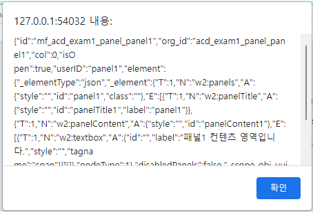

현재 열린 패널 중 첫 번째 혹은 지정한 인덱스에 해당하는 패널의 속성을 반환하는 예제입니다. 이 기능은 아래의 함수로 사용할 수 있습니다. - getOpenPanelInfo : 열린 패널 중에 index에 해당하는 패널 속성. parameter를 입력하지 않으면 제일 첫번째로 열린 패널 정보 반환.
패널의 속성을 반환하기
버튼 패널 속성 반환하기를 클릭합니다.
[브라우저(Chrome) 실행 예시]
Input컴포넌트에 아무것도 입력하지 않고 버튼 클릭 시 아래 그림과 같이 패널1의 속성을 반환합니다.
[브라우저(Chrome) 실행 예시]

Input컴포넌트에 숫자 3을 입력 후 버튼 패널 속성 반환하기를 클릭합니다.
[브라우저(Chrome) 실행 예시]
아래 그림과 같이 패널3의 속성을 반환합니다.
[브라우저(Chrome) 실행 예시]
Accordion컴포넌트의 패널의 속성을 반환하기 위해 아래의 함수를 사용합니다.
[선택] getOpenPanelInfo // 열린 패널 중에 index에 해당하는 패널 속성. parameter를 입력하지 않으면 제일 첫번째로 열린 패널 정보 반환.
[소스 코드 예시]
/** * 버튼 [패널 속성 반환하기] 클릭 시 */ scwin.btn_ex1_onclick = function (e) { // InputBox 'ibx_exam1'에 입력된 값을 변수 'ibx1Val' 저장합니다. let ibx1Val = ibx_exam1.getValue(); if (!ibx1Val) { // InputBox 'ibx_exam1'에 아무것도 입력되지 않았을 때 0을 세팅합니다. ibx1Val = 0; } else { // index는 0부터 시작이기 때문에 -1 합니다. ibx1Val = ibx1Val-1; } // Accordion 'acd_exam1'에 변수 'ibx1Val'에 해당하는 패널의 속성을 변수 'openPanel'에 저장합니다. let openPanel = acd_exam1.getOpenPanelInfo(ibx1Val); let openPanelInfo = JSON.stringify(openPanel); alert(openPanelInfo); };
getOpenPanelInfo
[웹스퀘어5 SP5 개발 가이드] Accordion
링크 : https://docs1.inswave.com/sp5_user_guide/8df43d1f59fab704#78fdcfd6e7d33101
[웹스퀘어5 SP5 개발 가이드] Accordion 특정 열린 패널의 속성 확인
링크 : https://docs1.inswave.com/sp5_user_guide/8df43d1f59fab704#b6ba05b6461c198e
Accordion 특정 열린 패널의 속성 확인